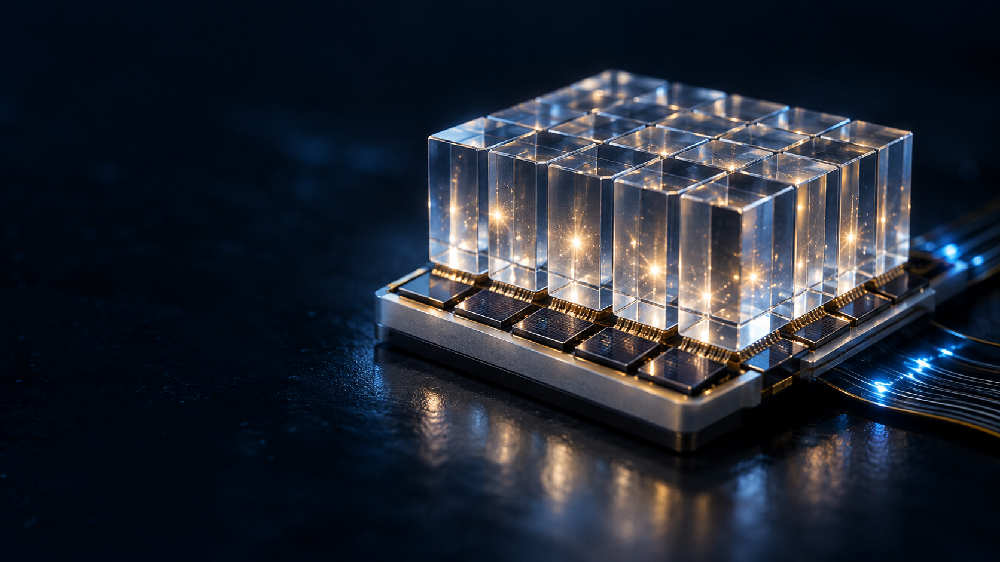
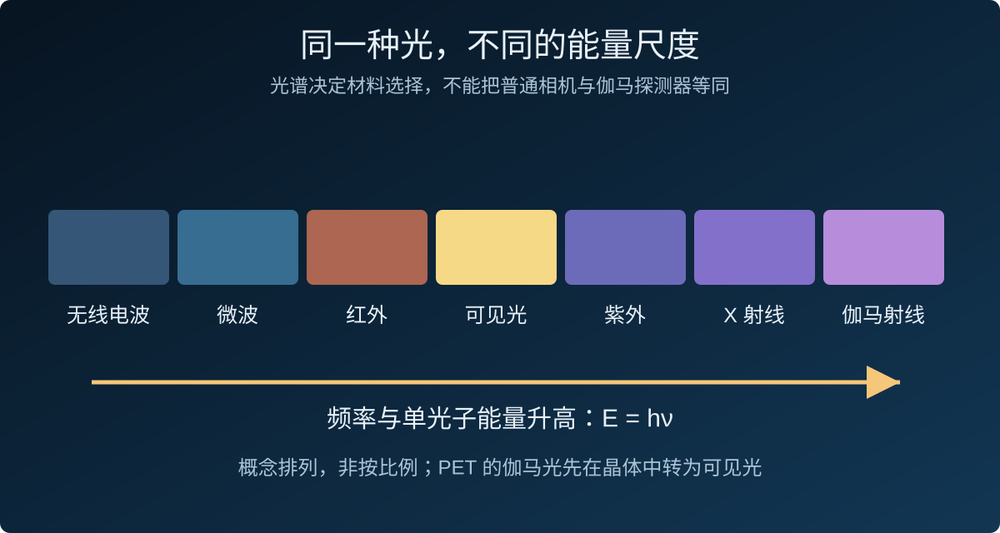
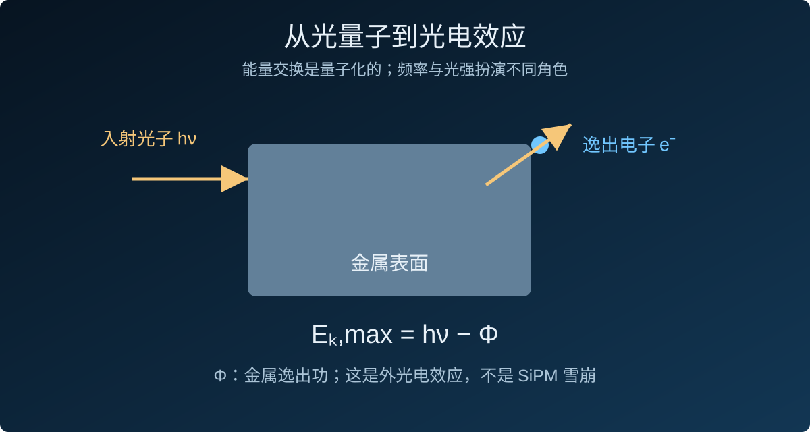
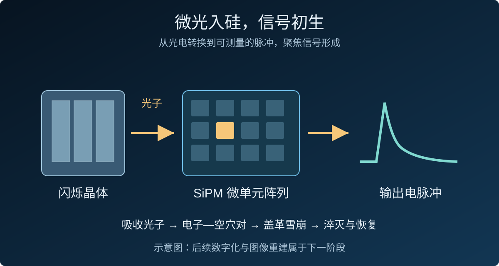

微光入硅，信号初生
从连续的光，到离散的能量交换
麦克斯韦的电磁理论解释了光的波动传播，但光与物质的能量交换还需要量子的描述。爱因斯坦以光量子解释光电效应：单个光子的能量由频率决定，E = hν。增加光强通常增加光子数，并不等于提高每个光子的能量。这一区别，使“微光”能够成为一个关于离散事件的测量问题。
光电效应为何成为量子理论的关键证据
光电现象把三个可测量的量放在一起：入射光的频率、光强，以及逸出电子的能量。1905年，爱因斯坦用光量子解释它们之间的关系；密立根随后通过精密测量，在1916年验证了光电效应定律。这条研究路径把关于光的认识，从直觉争论推进到可以改变实验条件、绘制曲线并检验预测的工作。
在单光子光电发射的通常条件下，低于阈值频率的光，即使增加强度，也不能让电子靠“积攒亮度”跨过逸出门槛；高于阈值时，改变频率会改变电子的最大动能，改变光强则主要影响发射数量。能量与数量的区分，延续到了今天的微弱光探测：需要分别问每个光子能否被吸收，以及一次事件有多少光子能够被记录。
先区分两种光：伽马光与闪烁光
在PET的闪烁探测路线中，晶体吸收伽马光子沉积的能量，再发出许多能量更低的可见光光子。SiPM主要接收的是这些闪烁光子，而不是让一个511 keV光子直接进入普通硅感光像素。晶体的发光与SiPM的光电转换是两个连续但不同的过程。

晶体把能量沉积转化为一群微光
伽马光子在闪烁晶体中沉积能量后，材料内部经历激发与能量迁移，再通过发光中心释放光子。输出的光子数、发射波段与时间分布，取决于材料及其发光过程。发光效率有限，能量也可以进入不产生可见光的通道，所以不能把伽马光子的能量简单视为全部转化成了传感器收到的光。
晶体的光产额关系到可收集的光子数量，发光时间结构关系到信号形成的节奏，发射光谱则需要与传感器的波长响应匹配。选择晶体与SiPM时，需要把这些特征放在一起评价。材料、表面处理、反射层和耦合条件共同作用，才形成具体探测单元的响应。
同一次能量沉积，也会产生统计波动
即使输入条件相同，两次事件所产生并被记录的光子数也不会完全一致。发光、收光和光电触发都包含概率过程。在独立计数、忽略其他波动的泊松模型中，平均记录N个事件时，标准差为√N，相对波动约为1/√N。这给出了增加有效计数为何有助于测量精度的基本统计解释。
这个简化模型同时提供比较方法：若平均计数从N增加到4N，相对统计波动约减半。实际系统还存在材料响应、光收集差异和相关噪声等影响，不能把这条理想关系直接当作最终能量分辨率。它适合用来辨认哪些改进增加了有效信息，哪些改进只是放大了已有输出。
光电效应：光如何交出能量
金属中的外光电效应
光照金属时，只有光子能量足以克服逸出功，电子才可能离开表面。最大动能满足Eₖ,max = hν − Φ。频率门槛与电子能量对频率的依赖，是光量子解释的关键；光电倍增管的光电阴极利用这种外光电效应产生电子，再以打拿极逐级放大。

硅中的载流子产生
半导体中的光子吸收可以激发电子—空穴对。在合适的器件结构与电场中，载流子被分离并形成电流。电子不需要像金属光电阴极那样飞出材料，才能成为可读信号。因此“光变成电”不是光子本身变成电子，而是光子的能量触发了材料内部的电荷响应。
从能带到结区：电荷为什么能够被收集
硅中的电子具有受材料能带结构约束的能量状态。具有足够能量的光子被吸收时，可以把电子激发到导带，在价带留下空穴。空穴描述的是可参与输运的缺失电子状态，与电子一起构成载流子。器件内部的电场使两类载流子向不同方向运动，让局部的吸收事件在外部电路中产生响应。
产生载流子只是第一步。吸收发生的位置、载流子的复合与输运，以及能否进入有效收集或倍增区域，都影响探测概率。器件设计因此需要同时考虑光从哪里进入、在多深的位置被吸收、电场如何分布，以及电荷如何到达电极。宏观可见的电脉冲，有着材料内部的微观路径。
同名的“光电效应”，需要看清能量尺度
金属光电阴极、硅中的光生载流子，以及伽马光子在晶体中的光电吸收，都涉及光与电子交换能量，但对应不同的材料环境与探测环节。讲解SiPM时，应明确这里讨论的是闪烁光在半导体中的吸收与雪崩触发。这个区分也使实验更清晰：改变入射波长、偏置或耦合方式，可以分别检验不同环节的响应。
量子的认识，如何成为可检验的测量
光既呈现干涉与衍射，也在探测中表现为离散的吸收事件。探测器的设计不需要在“波还是粒子”之间选边，而要明确实验记录什么：一次吸收、一个载流子触发，还是许多微单元共同形成的脉冲。理论提供解释，实验通过响应曲线、暗噪声与标定检验这种解释。
一次触发，如何成为可以比较的读数
实验记录的是经过器件与电子学响应后的结果。因此在比较两个传感器之前，需要说明光源波长、入射光量、温度、偏置、触发方式与积分时间。相同的光源设置，也需要确认实际到达感光面的光量。只有把这些条件固定或量化，脉冲之间的差别才有明确的物理解释。
一种基本研究方式是先在暗场记录基线与噪声，再用稳定的弱脉冲光源测量电荷谱，最后逐步增加入射光量。这样的过程把问题拆成可检验的观察：没有光时输出什么，有微光时增加什么，光更强时响应是否仍然成比例。它也为后续能量与时间测量建立了标定依据。
SiPM：把微弱的触发放大为信号
微单元、盖革雪崩与淬灭
SiPM由许多并联的微单元构成。每个微单元包含工作在盖革模式的雪崩光电二极管及淬灭元件。光子被吸收后产生的载流子，可以在强电场区域触发雪崩，使微弱的初始响应形成可读脉冲；随后必须淬灭雪崩并恢复偏置，微单元才能再次响应。

耦合：晶体发出的光，不会全部到达硅
晶体与传感器的耦合、光的反射与传播、器件对发射波段的响应，共同决定有效收光。评价SiPM也不能只看增益：光子探测效率、有效感光面积与雪崩触发概率，都会影响最终有多少入射光子成为可测事件。
信号与噪声：雪崩不一定由光子触发
热产生的载流子也可能触发雪崩，形成暗计数；串扰与后脉冲会引入相关响应。温度、过压和读出条件会改变器件表现。因此读到一个电脉冲，不等于无条件确认收到一个光子。探测必须通过暗场测量、增益标定与统计分析，区分信号、噪声及其不确定性。
动态范围：微单元不是无限多
当短时间内大量光子到达，同一微单元可能尚未恢复，脉冲幅度不再简单正比于入射光子数。有限微单元数量、恢复时间与饱和效应，是评价能量响应与计数能力时必须考虑的条件。
过压：放大能力与工作条件的共同选择
过压是实际反向偏置与击穿电压之差，它影响单次雪崩释放的电荷、增益以及雪崩触发概率。雪崩中的大量电荷主要由偏置电源提供，入射光子起到触发作用。信号被放大，意味着微弱事件获得了更容易读取的输出；它不会增加已经到达器件的光子数。
提高过压往往也伴随暗计数或相关噪声的变化，因此工作点需要结合探测效率、噪声和恢复特性选择。温度变化会影响击穿电压，固定偏置下的实际过压也随之改变。记录温度并进行必要的偏置补偿或标定，是维持可比较响应的重要条件。
单光电子电荷谱：给输出建立一个刻度
在合适的弱光与读出条件下，积分电荷分布可以出现对应零、一个、两个或更多微单元响应的峰。相邻峰的间距提供单次雪崩电荷的刻度，并可用于估计增益。“单光电子”是描述这种响应单位的常用术语；由于串扰和后脉冲，一个输出单位并不能总被逐一解释为一个外来光子。
标定还需要考虑电子学增益、基线与积分窗口。窗口过短可能漏掉部分电荷，过长则可能纳入更多噪声或后续响应。把电荷谱、暗场记录与入射光参考测量结合起来，才能分别讨论放大倍数和光子探测效率。
能量与时间：同一信号的两种信息
脉冲的积分电荷可帮助估计总响应规模，前沿时刻则与事件到达时间有关。一个能量沉积相近的事件，也可能因光子传播路径、发光时间和器件响应的随机性而出现不同的起始时刻。因此能量测量与时间测量需要各自的标定与不确定度分析。
探测模块的优化由此成为一组相互关联的选择：多收集一些光、减少位置依赖、稳定工作点、控制噪声，并让读出保留目标参数所需的信息。每一项都可以通过改变一个条件、重复测量并比较分布来检验。微光在硅中形成了信号，科学测量则进一步为这个信号建立可信的含义。
信号初生，测量仍需继续
本篇停在可测量的电脉冲：光量子的能量交换经过半导体器件，被放大、淬灭并读出。下一步才是怎样记录脉冲的时间与幅度、怎样结合模型估计事件参数。MVT负责这一数字化测量阶段；它既不能替代光电转换，也不能消除传感器本身的噪声与响应边界。